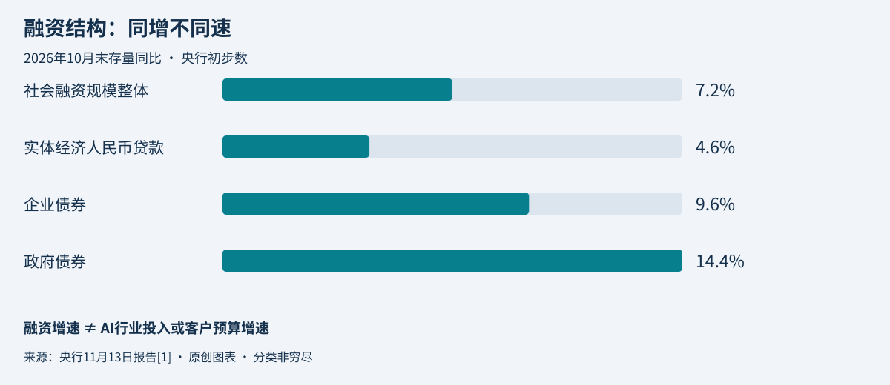

本期范围与证据口径
北京时间2026年11月14日。实际检索截止：08:14:15（UTC 00:14:15）。优先覆盖11月13日08:14:15至11月14日08:14:15；扩展覆盖11月11日08:14:15至11月14日08:14:15。本期交付4条已核验要闻，3条国内、1条全球；扩展检索仍未取得第五条足够可靠且不重复的材料，不凑数。
已回看最近7天已发布高管简报与今日独立AI日报。Wallet、DeepSeek API、llama.cpp、Claude Projects条目保持原样，本简报不重复其产品介绍。摘要为来源事实或有归属的官方表述；重要性、业务影响和建议为编辑分析。采购公告、中标、合同及验收分别看待。

01｜宏观：10月社融结构分化，不能把资金总量增长当作AI客户预算增长
事件口径：2026年10月末存量及前十个月累计增量；首次发布与本次新增：11月13日17:00（北京时间），过去24小时。
摘要： 央行初步统计显示，10月末社会融资规模存量469.16万亿元，同比增长7.2%；其中对实体经济人民币贷款余额同比增长4.6%，企业债券9.6%，政府债券14.4%。前十个月社融增量28.61万亿元，比上年同期少2.29万亿元。这是融资结构数据，不是AI行业投入或政府采购预算。[1]
为什么重要： 总量仍增长，但不同融资渠道的增速并不一致。对政企市场而言，宏观资金环境与具体客户的预算、审批和支付安排不能混为一谈。
业务影响： 政府债券增长不能直接推导成新增AI订单；银行信贷余额增速也不能证明某家客户缺钱。销售预测宜落实到项目资金来源、预算批准和付款节点。
建议： 新项目分别核实预算状态、采购计划及回款条件；算力资源投入用真实合同和使用计划校验，不按宏观增速机械外推需求。
证据与限制： 已读央行完整HTML报告。数据为初步数；图中均为10月末存量同比，未把存量增速与累计新增量混算，也未从总量推断某行业景气。[1]
02｜湖北新采购：长江大学89万元AI教学实验室，30天交付与验收是实质约束
采购公告及首次发布：11月13日16:54（北京时间），过去24小时。项目编号CDDL2026161（420001202606010919）。
摘要： 长江大学发布人工智能教学实验室竞争性磋商公告，预算及最高限价均为89万元。11月16日至20日获取文件，11月27日09:00（北京时间）响应截止。项目要求合同签订后30天内交货、安装并验收合格；不接受联合体、进口产品和分包。公告仅概括采购需求，详细配置须读正式文件。[2]
为什么重要： 这是有金额、窗口和交付节点的新采购，不是意向或已成交项目。对于软硬件一体方案，短交付期会直接影响备货与集成风险。
业务影响： 是否可参与取决于实质性要求、产品供货、安装及验收资源，不能只看报价。项目非专门面向中小微企业，符合条件小微企业价格扣除10%，不意味着所有投标人均享受优惠。
建议： 在文件获取窗口内先完成资格与需求核对，再核算供货、部署、培训及验收责任；未经正式需求核验，不假设GPU型号、模型能力或教学平台范围。
证据与限制： 已直接读取采购人官网完整公告。正式采购文件需在湖北采购平台注册并办理CA后获取，本期未取得第三章需求；仅报告公开公告，不声称已完成投标资格或配置评审。[2]
03｜北京：社科院大学761.8万元算力中标，响应证据与框架适配共同构成交付门槛
中标结果公告及首次发布：11月13日，未列时分，保守纳入72小时扩展。项目编号GC-HGX261204。
摘要： 中国社会科学院大学公布科教融合智能育人平台二期算力服务器中标结果，预算765万元，北京康邦科技中标761.8万元。公开标的表列出3台H3C R5500 GPU服务器，并要求支持主流训练、推理框架及相关CPU安全可靠测评。公告显示需求标准实质响应证明材料是符合性审查门槛，不只是性能参数竞争。[3]
为什么重要： 计算能力、软件适配与采购证明材料需要同时成立。技术方案看似可用，并不代表满足采购文件的实质响应要求。
业务影响： 761.8万元是整个项目中标金额，不是3台公开列示服务器的单独合计；不可用总额直接推算单卡或单位算力价格。中标也不代表合同签订、设备到货或验收完成。
建议： 同类项目提前建立需求条款与证明材料对应表，对训练、推理框架做可复现验证；避免把产品宣传支持列表当作本项目场景已测试通过。
证据与限制： 已直接读取采购人官网完整中标公告及公开主要标的表；未读取招标附件、签署合同或验收记录。性能参数为公告所列要求，未独立实测。[3]
04｜企业Agent运营：M365连接器恢复不等于所有业务任务已完成
事故始于11月12日，本次新增为11月13日恢复进展。Anthropic于11月13日21:49 UTC更新Resolved，即北京时间11月14日05:49，属于过去24小时。
摘要： Anthropic称M365服务事故影响了11月12日16:03至13日16:40 UTC的邮件、日历和搜索请求，后将本方事故标为已解决，但提示微软仍在恢复、可能偶有错误或延迟。OpenAI相关状态页仍显示Monitoring及性能降级，并报告恢复迹象。两家页面状态不同，不能概括为所有连接器已完全恢复。[4][5]
为什么重要： 企业Agent依赖模型之外的身份、连接器和办公系统。更换模型供应商未必能绕开共同的M365上游依赖。
业务影响： 服务恢复只是技术节点，失败任务、重复提交或结果不明仍需业务核对。这是架构与运营风险提示，不代表本次已证实发生重复写入或数据丢失。
建议： 核查受影响任务的实际结果，再对确认未生效的步骤安全重试；把上游依赖故障、人工接管和恢复后核对纳入验收，而不只统计模型接口可用率。
证据与限制： 已读取Anthropic与OpenAI完整事故记录。OpenAI最新条目标注11月13日05:20 PM但未显示时区，未擅自换算；微软状态首页需要JavaScript，未核验其完整事故根因。本条不将其他Claude事故归因于M365。[4][5]
地区覆盖与存量事项
广东福田与恩平采购线索未能读取官方原文，未列正式要闻；北京具身智能方案虽已读全文，但11月11日没有发布时分，无法确认落在本期72小时内，未用后续转载充当新事件。既有采购项目未因临近截止重复计入；本期未重新核实其延期或澄清，参与前须回采购平台确认。
今日判断
宏观融资仍增长，但结构分化不支持把资金总量直接映射为AI客户预算。湖北新采购有明确窗口，是否值得投入仍取决于正式需求和30天交付验收约束。北京中标显示，软件适配与采购响应材料需要同时准备，不能只卖硬件参数。办公连接器事故则提醒企业，Agent可靠性必须覆盖共同上游依赖与恢复后的结果核对，服务状态恢复不等于业务自动闭环。